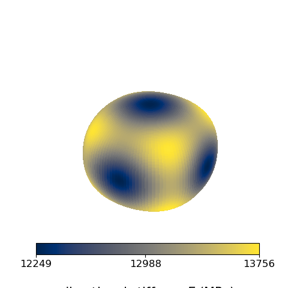

Note
Go to the end to download the full example code.
Homogenized stiffness of a periodic cell from low-level operators
This example computes the effective elastic stiffness matrix
\(\mathbf{L}^{\text{eff}}\) of a periodic gyroid unit cell without the
fedoo.homogen.get_homogenized_stiffness() helper (see
Homogenized elastic stiffness of periodic unit cells), to show
what it does. A fedoo.constraint.PeriodicBC adds the six mean strain
components as global degrees of freedom; six linear problems are solved, each
with a unit load on one of these components, and
\(\mathbf{L}^{\text{eff}}\) is built from the six solutions. The
directional Young’s modulus of the cell is then plotted.
import fedoo as fd
from simcoon import simmit as sim
import numpy as np
import matplotlib.pyplot as plt
from matplotlib import cm, colors
Mesh and material
The periodic gyroid mesh has been generated with microgen. The material is isotropic elastic (\(E = 10^5\) MPa, \(\nu = 0.3\)), given here by its stiffness matrix built with simcoon.
fd.ModelingSpace("3D")
dir_meshes = "../../util/meshes/"
mesh = fd.Mesh.read(dir_meshes + "gyroid_per_clean.vtk", name="Domain")
bounds = mesh.bounding_box
volume = bounds.volume # volume of the unit cell, voids included
L = sim.L_iso(np.array([1e5, 0.3]), "Enu")
print("material properties (E, nu):", sim.L_iso_props(L))
material = fd.constitutivelaw.ElasticAnisotropic(L, name="ElasticLaw")
wf = fd.weakform.StressEquilibrium("ElasticLaw")
assemb = fd.Assembly.create(wf, mesh, name="Assembling")
material properties (E, nu): [[100000. ]
[ 0.3]]
Periodic problem
meshperio=True states that the nodes of opposite faces match. The node
nearest to the center is blocked to remove the rigid body translation.
pb = fd.problem.Linear("Assembling")
bc_periodic = fd.constraint.PeriodicBC("small_strain", dim=3, meshperio=True)
pb.bc.add(bc_periodic)
center = mesh.nearest_node(bounds.center)
pb.bc.add("Dirichlet", center, "Disp", 0, name="center")
List of boundary conditions:
name = 'center'
number of bc = 3
0: Dirichlet (name = 'center') -> 'DispX' for 1 nodes set to 0
1: Dirichlet (name = 'center') -> 'DispY' for 1 nodes set to 0
2: Dirichlet (name = 'center') -> 'DispZ' for 1 nodes set to 0
Six elementary load cases
Each load case applies a unit Neumann condition on one mean strain component. The Neumann value conjugate to a mean strain dof is the mean stress multiplied by the cell volume, so the six resulting mean strains are the columns of \(V\,\mathbf{S}^{\text{eff}}\), with \(\mathbf{S}^{\text{eff}} = (\mathbf{L}^{\text{eff}})^{-1}\).
Prescribing the mean strains instead (typeBC = "Dirichlet") gives
\(V\,\mathbf{L}^{\text{eff}}\) directly as the reactions on the mean
strain dofs. Mean strains use engineering shear strains in both cases.
typeBC = "Neumann"
BC_perturb = np.eye(6)
components = ["E_xx", "E_yy", "E_zz", "E_xy", "E_xz", "E_yz"]
DStrain = []
DStress = []
for i in range(6):
pb.set_X(0) # remove the previous result
pb.bc.remove("_Strain")
for j, component in enumerate(components):
pb.bc.add(typeBC, component, BC_perturb[i][j], name="_Strain")
pb.solve()
# Mean strain dofs and their dual variables (mean stress * volume)
DStrain.append(np.ravel(pb.get_dof_solution("MeanStrain")))
DStress.append(np.ravel(pb.get_ext_forces("MeanStrain")))
if typeBC == "Neumann":
L_eff = np.linalg.inv(np.array(DStrain).T) / volume
else:
L_eff = np.array(DStress).T / volume
np.set_printoptions(precision=3, suppress=True)
print("L_eff =\n", L_eff)
L_eff =
[[16625.065 7223.75 7223.898 2.528 9.653 -3.876]
[ 7223.75 16629.488 7218.697 18.301 -0.796 -4.209]
[ 7223.898 7218.697 16628.438 2.943 -1.94 11.442]
[ 2.528 18.301 2.943 5373.2 -3.045 -0.493]
[ 9.653 -0.796 -1.94 -3.045 5374.723 2.315]
[ -3.876 -4.209 11.442 -0.493 2.315 5372.658]]
Directional Young’s modulus
For a uniaxial stress along the unit direction \(\mathbf{n}\),
In fedoo’s Voigt notation (engineering shear strains), the uniaxial stress \(\mathbf{n} \otimes \mathbf{n}\) is the vector \([n_1^2, n_2^2, n_3^2, n_1 n_2, n_1 n_3, n_2 n_3]\). The surface \(E(\mathbf{n})\,\mathbf{n}\) is plotted below.
phi = np.linspace(0, 2 * np.pi, 128) # azimuthal angle in the xy-plane
theta = np.linspace(0, np.pi, 128).reshape(128, 1) # polar angle
n_1 = np.sin(theta) * np.cos(phi)
n_2 = np.sin(theta) * np.sin(phi)
n_3 = np.cos(theta) * np.ones(128)
n = (
np.array([n_1 * n_1, n_2 * n_2, n_3 * n_3, n_1 * n_2, n_1 * n_3, n_2 * n_3])
.transpose(1, 2, 0)
.reshape(128, 128, 1, 6)
)
S_eff = np.linalg.inv(L_eff)
E = 1.0 / (n @ S_eff @ n.reshape(128, 128, 6, 1)).reshape(128, 128)
x = E * n_1
y = E * n_2
z = E * n_3
fig = plt.figure(figsize=plt.figaspect(1))
ax = fig.add_subplot(111, projection="3d")
ax.set_axis_off()
Emin, Eavg, Emax = np.min(E), np.average(E), np.max(E)
norm = colors.Normalize(vmin=Emin, vmax=Emax, clip=False)
ax.plot_surface(
x,
y,
z,
rstride=1,
cstride=1,
norm=norm,
facecolors=cm.cividis(norm(E)),
linewidth=0,
antialiased=False,
shade=False,
)
scalarmap = cm.ScalarMappable(cmap=plt.cm.cividis, norm=norm)
cbar = plt.colorbar(
scalarmap,
orientation="horizontal",
fraction=0.06,
pad=-0.1,
ticks=[Emin, Eavg, Emax],
ax=ax,
)
cbar.ax.tick_params(labelsize="large")
cbar.set_label(r"directional stiffness $E$ (MPa)", size=15, labelpad=20)
ax.azim = 30
ax.elev = 30
plt.show()

Total running time of the script: (0 minutes 5.278 seconds)